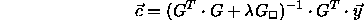
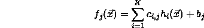
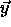
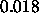
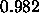
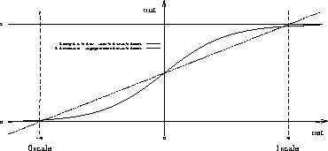

Of the named three procedures RBF_Weights is the most comprehensive one. Here all necessary initialization tasks (setting link weights and bias) for a fully connected three layer feedforward network (without shortcut connections) can be performed in one single step. Hence, the choice of centers (i.e. the link weights between input and hidden layer) is rather simple: The centers are evenly selected from the loaded teaching patterns and assigned to the links of the hidden neurons. The selection process assigns the first teaching pattern to the first hidden unit, and the last pattern to the last hidden unit. The remaining hidden units receive centers which are evenly picked from the set of teaching patterns. If, for example, 13 teaching patterns are loaded and the hidden layer consists of 5 neurons, then the patterns with numbers 1, 4, 7, 10 and 13 are selected as centers.
Before a selected teaching pattern is distributed among the corresponding link weights it can be modified slightly with a random number. For this purpose, an initialization parameter ( deviation, parameter 5) is set, which determines the maximum percentage of deviation allowed to occur randomly. To calculate the deviation, an inverse tangent function is used to approximate a normal distribution so that small deviations are more probable than large deviations. Setting the parameter deviation to 1.0 results in a maximum deviation of 100%. The centers are copied unchanged into the link weights if the deviation is set to 0.
A small modification of the centers is recommended for the following reasons: First, the number of hidden units may exceed the number of teaching patterns. In this case it is necessary to break the symmetry which would result without modification. This symmetry would render the calculation of the Moore Penrose inverse matrix impossible. The second reason is that there may be a few anomalous patterns inside the set of teaching patterns. These patterns would cause bad initialization results if they accidentally were selected as a center. By adding a small amount of noise, the negative effect caused by anomalous patterns can be lowered. However, if an exact interpolation is to be performed no modification of centers may be allowed.
The next initialization step is to set the free parameter p of the base function h, i.e. the bias of the hidden neurons. In order to do this, the initialization parameter bias (p) is directly copied into the bias of all hidden neurons. The setting of the bias is highly related to the base function h used and to the properties of the teaching patterns. When the Gaussian function is used, it is recommended to choose the value of the bias so that 5--10% of all hidden neurons are activated during propagation of every single teaching pattern. If the bias is chosen too small, almost all hidden neurons are uniformly activated during propagation. If the bias is chosen too large, only that hidden neuron is activated whose center vector corresponds to the currently applied teaching pattern.
Now the expensive initialization of the links between hidden and output layer is actually performed. In order to do this, the following formula which was already presented above is applied:

The initialization parameter 3 ( smoothness) represents the value
of  in this formula. The matrices have been extended to allow
an automatic computation of an additional constant value. If there is
more than one neuron inside the output layer, the following set of
functions results:
in this formula. The matrices have been extended to allow
an automatic computation of an additional constant value. If there is
more than one neuron inside the output layer, the following set of
functions results:

The bias of the output neuron(s) is directly set to the calculated value of b (). Therefore, it is necessary to choose an activation function for the output neurons that uses the bias of the neurons. In the current version of SNNS, the functions Act_Logistic and Act_IdentityPlusBias implement this feature.
The activation functions of the output units lead to the remaining two initialization parameters. The initialization procedure assumes a linear activation of the output units. The link weights are calculated so that the weighted sum of the hidden neurons equals the teaching output. However, if a sigmoid activation function is used, which is recommended for pattern recognition tasks, the activation function has to be considered during initialization. Ideally, the supposed input for the activation function should be computed with the inverse activation function depending on the corresponding teaching output. This input value would be associated with the vector

during the calculation of weights. Unfortunately, the inverse activation function is unknown in the general case.The first and second initialization parameters ( 0_scale) and ( 1_scale) are a remedy for this dilemma. They define the two control points of a piecewise linear function which approximates the activation function. 0_scale and 1_ scale give the net inputs of the output units which produce the teaching outputs 0 and 1. If, for example, the linear activation function Act_IdentityPlusBias is used, the values 0 and 1 have to be used. When using the logistic activation function Act_Logistic, the values -4 and 4 are recommended. If the bias is set to 0, these values lead to a final activation of

(resp.
). These are comparatively good approximations of the desired teaching outputs 0 and 1. The implementation interpolates linearly between the set values of 0_scale and 1_scale. Thus, also teaching values which differ from 0 and 1 are mapped to corresponding input values.

Figure  shows the activation of an output unit under
use of the logistic activation function. The scale has been chosen in
such a way, that the teaching outputs 0 and 1 are mapped to the input
values -2 and 2.
shows the activation of an output unit under
use of the logistic activation function. The scale has been chosen in
such a way, that the teaching outputs 0 and 1 are mapped to the input
values -2 and 2.
The optimal values used for 0_scale and 1_scale can not be given in general. With the logistic activation function large scaling values lead to good initialization results, but interfere with the subsequent training, since the logistic function is used mainly in its very flat parts. On the other hand, small scaling values lead to bad initialization results, but produce good preconditions for additional training.